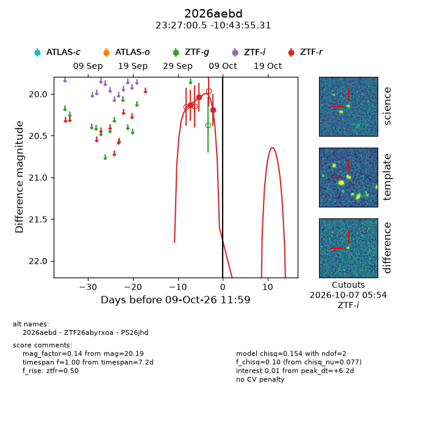
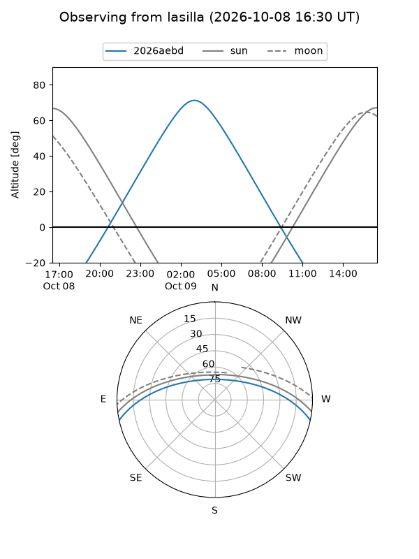
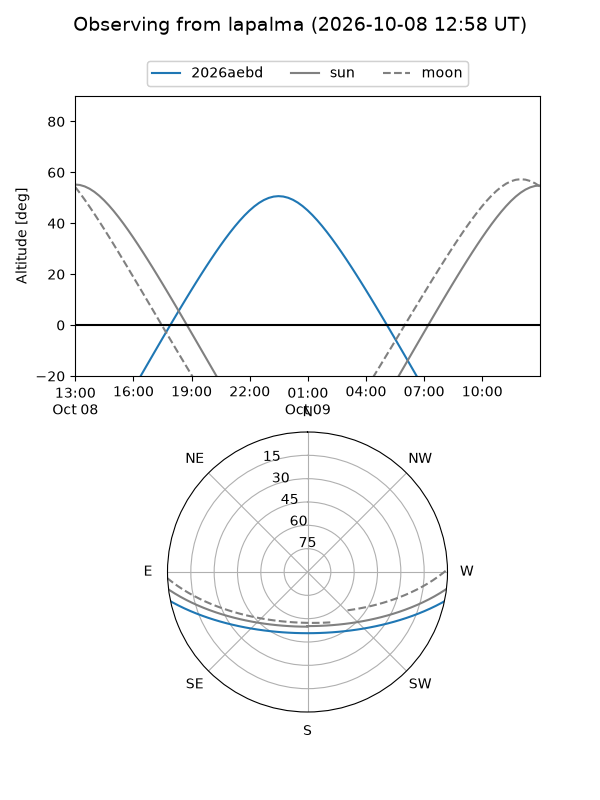
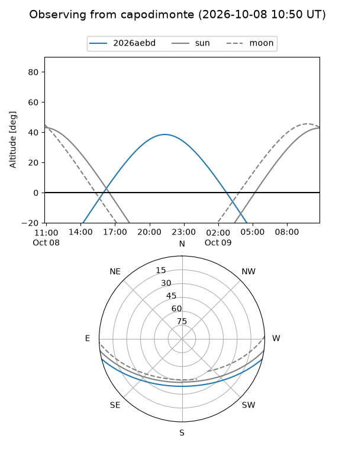
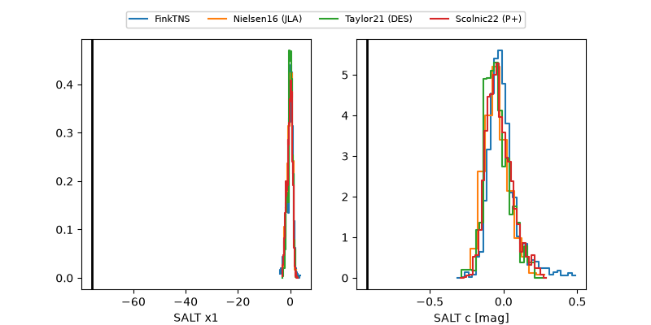

2026aebd
Target 2026aebd at 2026-10-09 12:01
Aliases and brokers:
FINK-ZTF: ztf.fink-portal.org/ZTF26abyrxoa
Lasair-ZTF: lasair-ztf.lsst.ac.uk/objects/ZTF26abyrxoa
ALeRCE-ZTF: alerce.online/object/ZTF26abyrxoa
YSE-PZ: ziggy.ucolick.org/yse/transient_detail/2026aebd
TNS name: wis-tns.org/object/2026aebd
Direct TNS query: direct search
alt names
ZTF26abyrxoa (ztf,fink_ztf)
2026aebd (tns,yse)
PS26jhd (panstarrs)
Coordinates:
equatorial (ra, dec) = 351.7521,-10.73203
equatorial (HMS+DMS) = 23:27:00.49,-10:43:55.31
galactic (l, b) = (68.4151,-64.24561)
Flags:
peak dt: +6.2
Photometry:
last ztfr=20.19
3 ztfr detections
Lightcurve

Visibility



Additional plots
